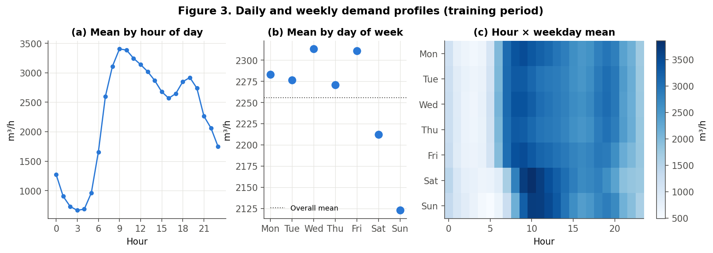
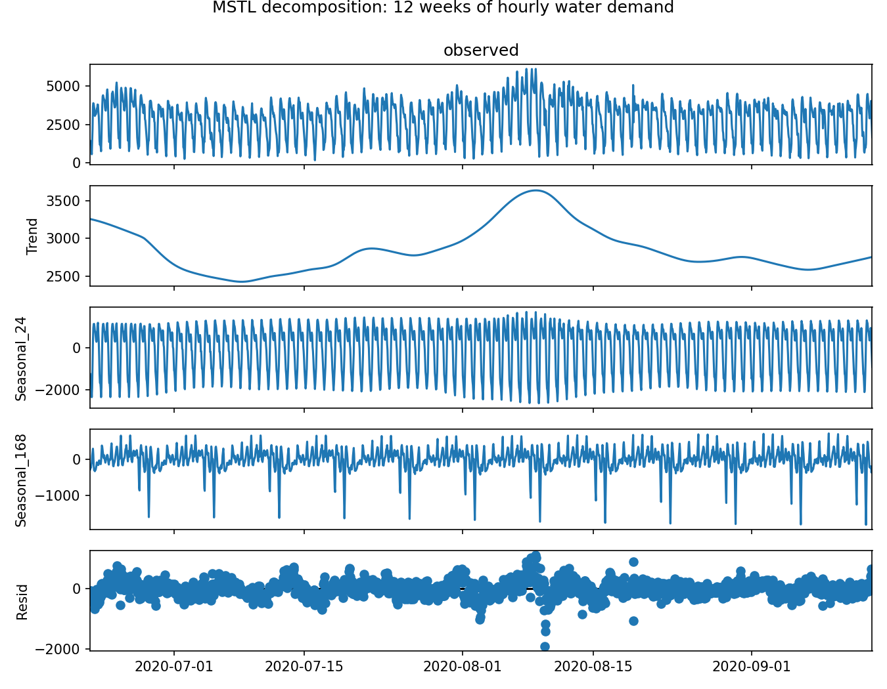
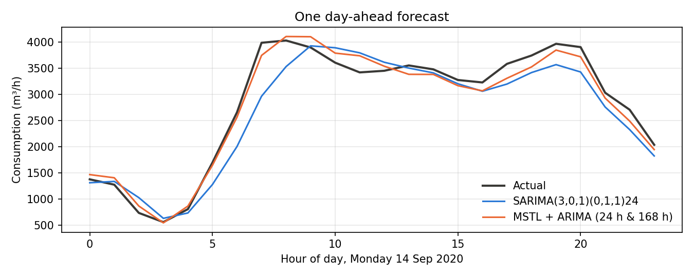
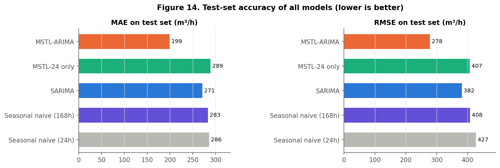

A worked example with real hourly data from a German water network
When you open a tap, the water usually comes from a storage tank that a pump filled hours earlier. Utilities plan those pump runs a day in advance. Pumping at the wrong time wastes electricity, and filling tanks too little risks low pressure. So a good estimate of tomorrow's demand, hour by hour, is a useful planning input. In this post I show how two classical time-series tools, SARIMA and MSTL decomposition, handle that task on real data, and why the choice between them matters.
A time series is a set of measurements in time order. Water demand is a textbook example of seasonality: patterns that repeat with a fixed period. Here there are two:
The weekly effect is easy to miss, because the weekend average is only about 5% lower than a weekday's. What changes is the shape of the day.

Figure 1. Average demand by hour, by weekday, and hour × weekday (training data). Note the later weekend morning peak in the heat map.SARIMA (seasonal ARIMA) predicts the next value from recent values and recent errors, after removing a repeating pattern by seasonal differencing: subtracting the value one season earlier. With hourly data the natural season is s = 24, so the model compares each hour with the same hour yesterday. A SARIMA model has one seasonal period. If yesterday was a Sunday and today is a Monday, the model starts from the wrong kind of day.
MSTL (Multiple Seasonal-Trend decomposition using Loess) splits a series into a trend, one seasonal component per period and a remainder: y = trend + daily + weekly + remainder. MSTL does not forecast on its own, so we add three steps: repeat each seasonal component's latest cycle into the future, forecast the seasonally adjusted part (trend + remainder) with a small ARIMA model, and add everything back.
I used the open dataset Hourly Water Demand of a Mixed District Recorded by Supplier (Weyrauch et al., 2024, Zenodo, CC-BY 4.0). It contains 46,032 hourly readings from January 2016 to April 2021 at a pumping station serving homes, shops and industry in Germany. The publisher also provides a cleaned version in which every day has exactly 24 hours (daylight-saving changes fixed). That regular grid matters when you use seasonal periods of 24 and 168.
The snippet below loads the data, decomposes the last 12 weeks before a forecast day and builds both forecasts for the next 24 hours. It uses pandas and statsmodels 0.14 and runs as shown.
import pandas as pd
from statsmodels.tsa.seasonal import MSTL
from statsmodels.tsa.arima.model import ARIMA
from statsmodels.tsa.statespace.sarimax import SARIMAX
df = pd.read_csv("waterconsumption_noNaN_fixedTimechange.csv")
hour = df["Time"].str.strip().str[:2].astype(int)
df.index = pd.to_datetime(df["Date"], format="%m/%d/%Y") + pd.to_timedelta(hour, unit="h")
y = df["Consumption"].asfreq("h")
origin = pd.Timestamp("2020-09-14 00:00") # forecast this Monday
hist = y[origin - pd.Timedelta(weeks=12):origin - pd.Timedelta(hours=1)]
# Enhanced model: MSTL + ARIMA
res = MSTL(hist, periods=(24, 168), stl_kwargs={"seasonal_deg": 0}).fit()
s24, s168 = res.seasonal["seasonal_24"], res.seasonal["seasonal_168"]
season_next = s24.values[-24:] + s168.values[-168:-144]
adjusted = hist - res.seasonal.sum(axis=1)
mstl_fc = ARIMA(adjusted.values, order=(1, 1, 1)).fit().forecast(24) + season_next
# Baseline: SARIMA(3,0,1)(0,1,1) with s = 24
sarima = SARIMAX(hist[-4*168:], order=(3, 0, 1), seasonal_order=(0, 1, 1, 24)).fit(disp=False)
sarima_fc = sarima.forecast(24)
What the code does. The Time column holds intervals such as "07:00-08:00", so we take the first two characters as the hour and build a proper hourly timestamp. hist contains only data before midnight of the forecast day, which prevents information from the future leaking into the model. MSTL(..., periods=(24, 168)) returns one seasonal column per period. Repeating the last 24 values of the daily component and the matching 24 values from one week earlier gives tomorrow's seasonal shape. ARIMA(1,1,1) then forecasts what is left. The SARIMA orders were chosen in the full project from the ACF/PACF plots and validation accuracy.

Figure 2. MSTL splits 12 weeks of demand into trend, daily (24 h) and weekly (168 h) components and a remainder.
Figure 3. Monday 14 September 2020. SARIMA (blue) copies Sunday's late morning rise; MSTL + ARIMA (orange) remembers last Monday.A single day proves little, so the full project repeated this every day for 288 days that no model had seen during tuning (June 2020 – April 2021): 6,912 hourly forecasts. Mean absolute error (MAE) fell from 270.7 m³/h for SARIMA to 199.1 m³/h for MSTL + ARIMA, a 26.4% reduction. RMSE fell 27.3% and MAPE fell from 15.9% to 11.2%. A Diebold–Mariano test showed the difference is very unlikely to be chance. Most of the gain came on weekends and around 7 a.m. When I removed the weekly component and kept everything else the same, the error was worse than SARIMA's (MAE 288.8). The weekly pattern is what made the difference.

Figure 4. Test-set MAE and RMSE for all models, including two seasonal-naive benchmarks.A more accurate day-ahead forecast can help operators plan pump schedules and tank levels, for example by preparing for the weekend morning peak instead of assuming every day looks like yesterday. This links to UN Sustainable Development Goal 6 (Clean Water and Sanitation), which includes efficient water use and sound management of water resources, and indirectly to energy efficiency. To be clear about the evidence: this study measured forecast accuracy, not energy or water savings. Those benefits are possible, but they would need a separate study. The method also has limits: one district, a test period that overlaps the 2020–21 pandemic, and no weather inputs. The largest remaining errors were hot summer evenings.
Hourly water demand has more than one rhythm. A single-season SARIMA captures the daily cycle but treats Monday like Sunday. Splitting the series into daily and weekly components with MSTL, and forecasting only what remains, is a small change in Python with a large effect on accuracy. Try it on your own time series: first plot demand by hour and by weekday, and check whether there is a second rhythm hiding in your data.